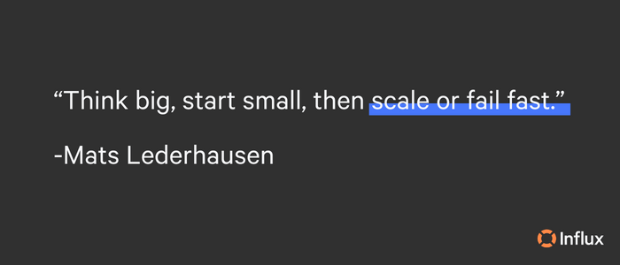
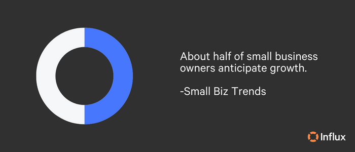
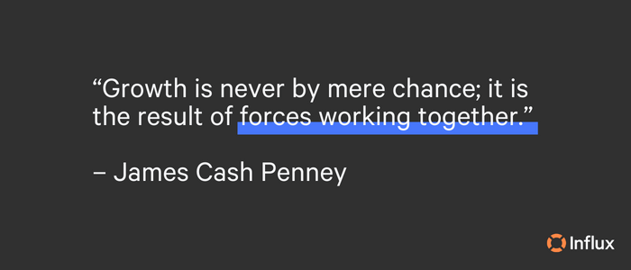
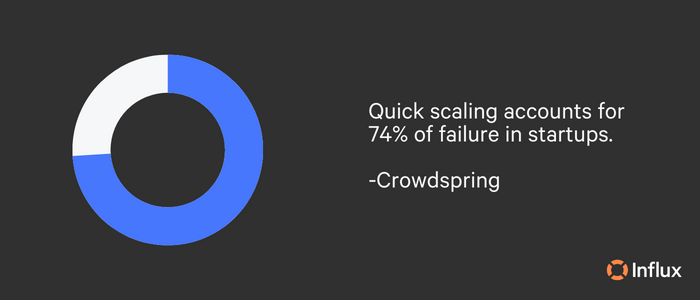
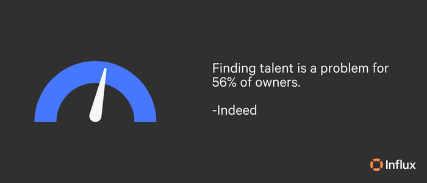

Scaling is a challenging yet rewarding endeavor that businesses can achieve with patience, persistence, and the right strategies. Leaders looking to scale will need to be aware of challenges, as well as how to overcome them, to grow sustainably. Businesses need the right planning and support to see success when scaling. In this comprehensive guide, we’ll cover everything you need to know about scaling.
What does it mean to scale up a business?
What is the difference between scaling and growth?
Why you should invest in scaling your business
The risks of scaling up a business
Top scaling challenges and how to overcome them
How long does business scaling take?
Is scaling your business the right move?
Scale fast and launch new channels
What does it mean to scale up a business?
Scaling involves creating a system or process that can handle a larger volume of business without requiring proportional increases in resources, and other tools to improve efficiency and reduce costs, while also expanding the customer base. The goal of scaling a business is to increase revenue and efficiency with a cost-effective, controlled approach.

What is the difference between scaling and growth?
While growing and scaling is often used interchangeably, there is a distinction between the two concepts. Growing a business generally refers to the process of increasing revenue, customers, and/or profits over time. This can be achieved by expanding products or service offerings, increasing marketing efforts, hiring more employees, and improving operational efficiency.
On the other hand, scaling a business refers to the process of increasing revenue and profits at an exponential rate without incurring significant additional costs. The main distinction between growth and scaling is that growth means adding revenue at the same pace you are adding resources, whereas scaling means adding revenue at a much greater rate than cost.
Why you should invest in scaling your business
The benefits of scaling, when done correctly, can help businesses grow and achieve their goals with flexible solutions. Optimizing and increasing operational efficiency appropriately meets the needs of market demands and increases profit margins. Businesses with a high capacity to scale will see growth in their revenue at a much faster rate than their expenses. As a way for leaders to determine steps towards growth, scaling equips businesses for expansion through strategic decision making.
When to scale your business
Scaling is an attractive opportunity for entrepreneurs and business owners looking to take their company to the next level. The important thing to remember when thinking about scaling is to consider the timing. If a business scales at the wrong time, it can result in low morale, stress, or total failure. However, there are a few factors that signify a business can handle scaling up.
Key signs that a business is ready to scale:
- Slow growth
- Surpassing previous goals
- Turning down opportunities
- Steady cash flow
- Reliable infrastructure
Preparing for seasons of scale, like many other business decisions, can come with its own risks. Take the time to make sure your business is ready to scale before implementing any changes that could be detrimental or irreversible.

The risks of scaling up a business
Taking on an increased workload and meeting demands without fatigue or burnout can be a challenge for any business, regardless of size. In fact, if a business isn’t ready to deliver at a faster pace, growth can be damaging beyond repair. The main risks to look out for when scaling include:
- Scaling too fast
- Imbalanced cash flow
- Failing to plan
- Staff burnout
- Managing compliance
A popular low-risk solution to scaling is finding a trusted, cost-effective third-party partner that can support your team and free up their time and energy to complete important responsibilities. Combat the risks of scaling by brainstorming potential solutions to difficult challenges and creating a plan of action for high-impact risks. Businesses may also consider restructuring management or hiring/training if it fits within their strategic timeline and doesn’t hinder production.
Scaling at the right time means a business can take on an increased workload and deliver results without suffering. Risks are a natural part of the decision-making process, and the best way to see success when scaling is to balance risk vs reward.
Top scaling challenges and how to overcome them
There are several challenges that businesses face when beginning the scaling process. As an effort to scale successfully from the perspective of knowing what not to do, keep these common challenges top of mind in your planning:
- Finding and retaining top talent
- Lacking resources or support
- Losing company culture
- Letting go of control
- Not focusing on the customer
- Maintaining quality and consistency
A simple solution to many of these challenges is Influx support. Cost-friendly, month to month pricing allows you to save time on recruiting new team members with support that has all management and training included. Influx supports expansion with flexibility to help you reach your goals. Whether you need eCommerce support, customer support, sales teams on demand, and more, our teams can be ready in as little as one week to support you every step of the way. Find supportive solutions to help you scale your business!

How to scale a business
Growing in size and scope can look different for each business, depending on your needs and customer base. With the goal of increasing profitability and productivity, the scalability phase can look like the following.
- Develop a growth strategy: Identify your target audience, assess the market demand, and analyze competition to create a growth strategy that aligns with your goals.
- Create a strong brand image: Building a strong brand image can help you attract more customers. Ensure that your message and values are consistent across all channels while you grow.
- Secure funding: Scaling a business requires funding. You may need to bring on new staff, invest in new technology, and set up ways to track results.
- Automate business processes: Automating repetitive tasks can free up time and resources to focus on scaling other aspects of your business. When you can’t automate, outsource.
- Consider an outsourcing partner: There are many advantages to outsourcing, such as gaining the help of experts, lowering costs, and increasing revenue. Influx provides efficiency at scale for the support you need to grow your business. Find your support solution today!
- Hire the right team: Hiring the right employees with the right skills and experience is crucial for scaling. As your business grows, you’ll need to hire more staff to take on new roles and responsibilities, or to find support who can offer their services.
- Leverage technology: Technology can help you streamline operations, increase efficiency, and improve customer service. Consider investing in software and tools that can help you manage infrastructure and ease bottlenecks.
- Focus on customer satisfaction: Happy customers can help your business grow through positive reviews and referrals. Ensure that you have a solid customer service strategy in place to turn one time customers into loyal customers.
- Promote your brand to a broader audience: In the scaling process, it’s easy to focus on internal optimization, but it’s important to keep customers at the forefront of decisions. How can you reach your target audience in new ways?
- Take care of your team: Additional workload and projects can cause stress or lower quality work. Keep an uplifting atmosphere and discuss how things are going with your team. Recognize them for their hard work and celebrate your wins.
Scaling required careful planning, investment, and execution. Selecting the right strategies for your business and consistently evaluating your progress can result in sustainable growth and success.

How long does business scaling take?
Most small firms take around two to four years to become profitable since a majority of earnings go towards expenses and reinvestment. This means that new businesses may take years to reach the point where they have the capacity to scale successfully. Although there is no set timeline, the length of time it takes to scale a business can vary depending on a variety of factors, including industry, business model, market conditions, and available resources. In general, scaling a business can take several months to several years. The most balanced approach is to scale gradually, making sure that growth is supported.
Another factor to consider is the business model being used. For example, if the business is a retail store or physical location, scaling may take longer as the business needs to find and set up additional locations. Alternatively, eCommerce businesses may scale faster due to reaching a larger audience without the need for physical expansion.
Scaling your business may look different from how other businesses scale and creating your own timeline that fits your specific operations is ideal. It’s also important to note that scaling a business is not a one-time event, but rather a continuous process. Businesses need to assess their growth constantly and adjust their strategies accordingly. This ongoing process can take years to achieve sustainable, long-term growth.
How to scale customer support
The natural tendency of businesses can sometimes be to squeeze customer teams when focusing on scaling, but this is the opposite of what should happen. Customer support teams should scale as your business grows. Great customer support is essential for the success of your business, and it’s possible to increase customer support output without decreasing quality.

Five strategies to scale your customer support team:
- Invest in programs and tools - the right combination of software and technology can optimize every aspect of customer support and provide your staff with the tools to bring success.
- Scale your team with customer support outsourcing - for businesses that are nearing capacity, not wishing to hire more staff, or are in need of assistance, Influx’s customer supportis a cost-effective, 24/7 solution. Get an extra layer of support while you grow!
- Improve your knowledge base - according to Forrester, customers prefer knowledge bases over all other self-service channels. If customers can find the answer on your website, this can significantly cut down on support tickets.
- Automate repetitive tasks - a company of any size benefits from automating repetitive tasks. For customer support teams, this may mean creating macros, or improving speed, autonomy, and convenience.
- Improve customer service practices and processes - ask for feedback on the process to ensure your customers are getting the assistance they need.
For more, check out our other resource on how to scale CX teams and maximize ROI!
Is scaling your business the right move?
Whether scaling your business is the right move depends on your goals, resources, market conditions, and competitive landscape. Scaling can be an excellent opportunity when done correctly, but it’s not a decision to take lightly. It’s important to determine whether this is the right time for your business to do so by making sure you understand the risks and benefits. Carefully assess your ability to handle the challenges of scaling, and if your team, infrastructure, and finances are stable, we wish you all the best!
Scale fast and launch new channels
We want to support you and your customers every step of the way in scaling. We know this process isn’t easy and we’re here to offer solutions. Whether you need a sales team, eCommerce support, or expert customer support teams, Influx is here to help with simple, month-to-month pricing. Focus on growth while we handle the rest!